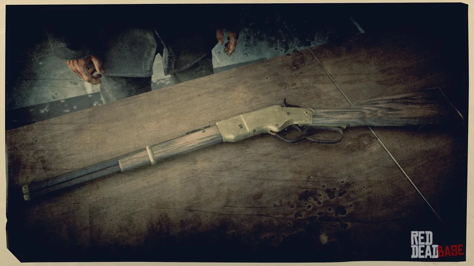

ARMARIA DA CAVALARIA DO OESTE
Conheça o arsenal.
Respeite a patente.
Do primeiro coldre ao comando. Consulte as armas autorizadas e as regras de porte de cada patente.
Consultar relação completa15 ARMAMENTOS5 CATEGORIAS6 PATENTES
ACERVO DO OESTE

WINCHESTERRepetidora · Ação por alavanca
01 / REGULAMENTO DE PORTE
Qual patente deseja consultar?
A consulta não altera a patente da sua conta.
PATENTE EM CONSULTA
- Modelos permitidos
- Porte de coldre
- Armas longas
02 / CATÁLOGO ILUSTRADO
O arsenal, em detalhes.
03 / RELAÇÃO PATENTE × ARMAMENTOO regulamento completo
Permissões reproduzidas da relação enviada pelo Comando. Cada linha é independente: uma patente superior não herda automaticamente armas de outra.
| Patente | Revólveres | Pistolas | Repetidoras | Escopetas | Rifles | Observações de porte |
|---|